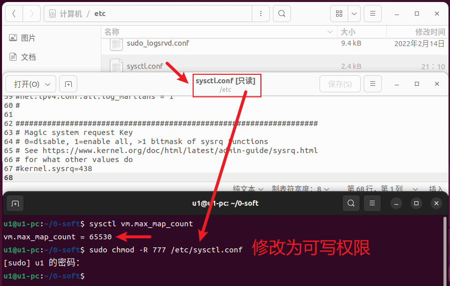
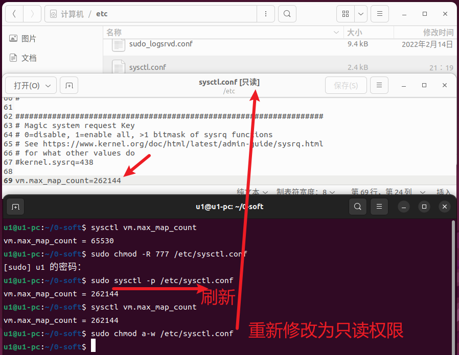
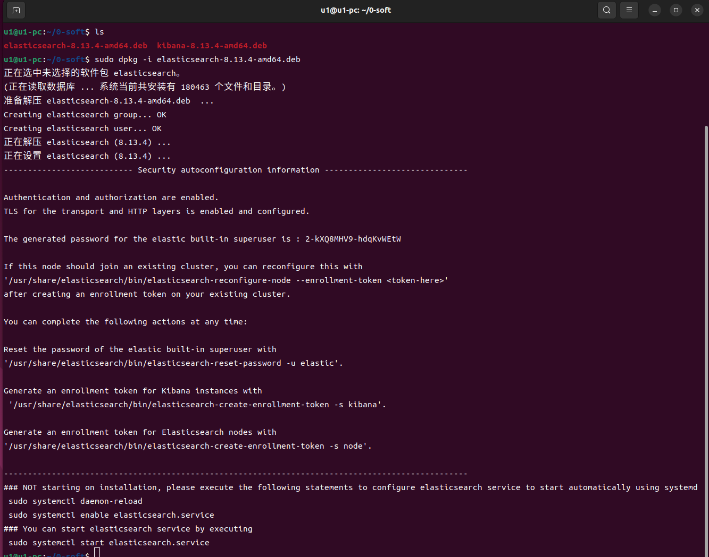
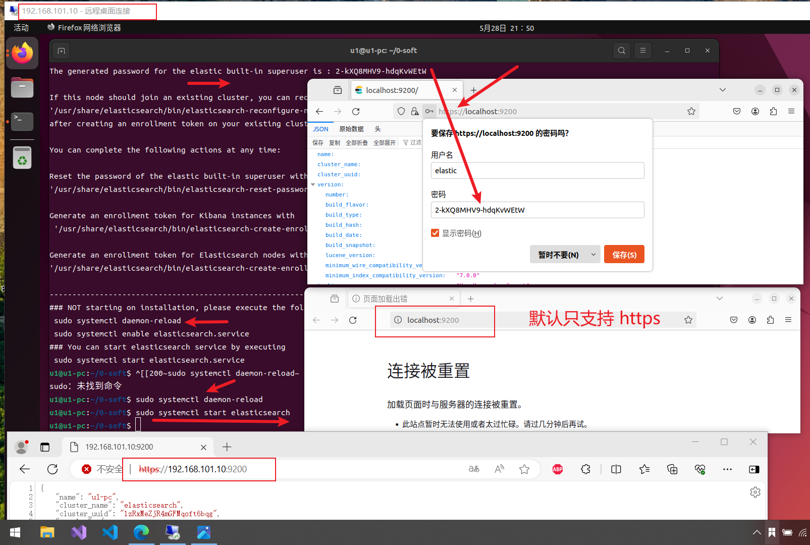
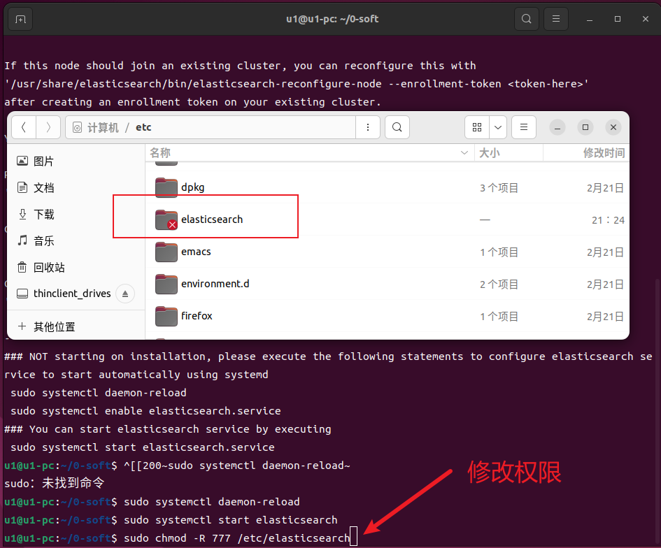
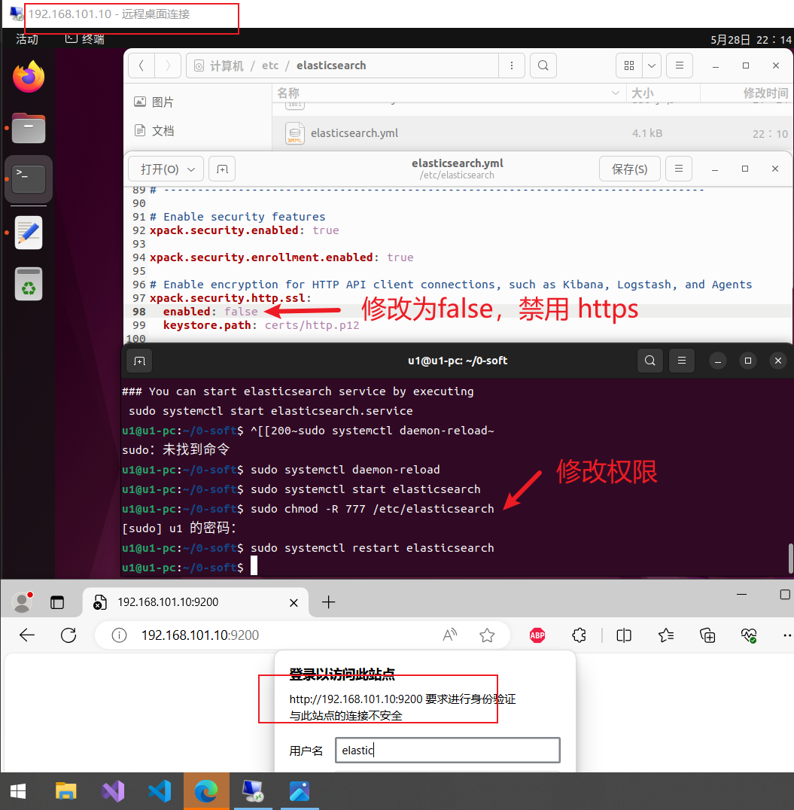
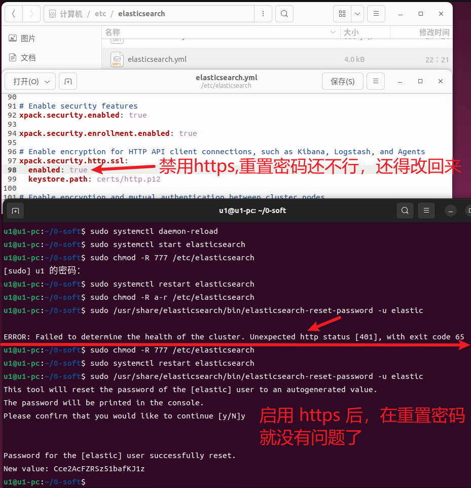

整理收集 ELK Stack 相关的东东
安装之前，先弄一下卸载
# 停止服务
sudo systemctl stop elasticsearch
# 卸载 Elasticsearch 包
# -r (--remove)，它将删除软件包，但保留配置文件。
sudo dpkg -r elasticsearch
# -P (--purge)，选项用于彻底删除软件包，包括它的配置文件。使用时，软件包的所有痕迹将被清除，包括配置文件和日志文件等。
sudo dpkg -P elasticsearch
# 删除 elasticsearch 用户和用户组
# 查看用户组
cat /etc/group
# 删除用户组
sudo groupdel elasticsearch
# 查看用户
cat /etc/passwd | cut -f 1 -d:
# 删除用户
sudo userdel -r elasticsearch
# 删除文件夹或者文件
sudo rm -rf /etc/elasticsearch /usr/share/elasticsearch /var/lib/elasticsearch /var/log/elasticsearch /etc/apt/sources.list.d/elasticsearch.list
sudo apt autoremove
sudo apt autoclean
sudo apt update
# 看看是否还有漏网之鱼
dpkg -l | grep elasticsearch
官网下载地址：Download Elasticsearch | Elastic。这里使用的版本是：
官方关于
# 查看 vm.max_map_count 的大小
sysctl vm.max_map_count
# 修改 vm.max_map_count 的值
# 修改文件权限
# -R (--recursive)，它的作用是递归地改变指定目录及其所有子目录和文件的权限。
sudo chmod 777 /etc/sysctl.conf
# 文件末尾写入
vm.max_map_count=262144
# 刷新
sudo sysctl -p /etc/sysctl.conf
# 再次查看
sysctl vm.max_map_count
# 撤回文件权限
# a 是一个特殊的选项，代表“所有”（all），它指定了对所有用户（用户、组和其他）的权限。
# -w 表示移除写权限。
# -r 表示移除读权限。
sudo chmod a-w /etc/sysctl.conf


sudo dpkg -i elasticsearch-8.13.4-amd64.deb
sudo systemctl daemon-reload
u1@u1-pc:~/0-soft$ sudo dpkg -i elasticsearch-8.13.4-amd64.deb
正在选中未选择的软件包 elasticsearch。
(正在读取数据库 ... 系统当前共安装有 180463 个文件和目录。)
准备解压 elasticsearch-8.13.4-amd64.deb ...
Creating elasticsearch group... OK
Creating elasticsearch user... OK
正在解压 elasticsearch (8.13.4) ...
正在设置 elasticsearch (8.13.4) ...
--------------------------- Security autoconfiguration information ------------------------------
Authentication and authorization are enabled.
TLS for the transport and HTTP layers is enabled and configured.
The generated password for the elastic built-in superuser is : 2-kXQ8MHV9-hdqKvWEtW
If this node should join an existing cluster, you can reconfigure this with
'/usr/share/elasticsearch/bin/elasticsearch-reconfigure-node --enrollment-token <token-here>'
after creating an enrollment token on your existing cluster.
You can complete the following actions at any time:
Reset the password of the elastic built-in superuser with
'/usr/share/elasticsearch/bin/elasticsearch-reset-password -u elastic'.
Generate an enrollment token for Kibana instances with
'/usr/share/elasticsearch/bin/elasticsearch-create-enrollment-token -s kibana'.
Generate an enrollment token for Elasticsearch nodes with
'/usr/share/elasticsearch/bin/elasticsearch-create-enrollment-token -s node'.
-------------------------------------------------------------------------------------------------
### NOT starting on installation, please execute the following statements to configure elasticsearch service to start automatically using systemd
sudo systemctl daemon-reload
sudo systemctl enable elasticsearch.service
### You can start elasticsearch service by executing
sudo systemctl start elasticsearch.service
u1@u1-pc:~/0-soft$

sudo systemctl start elasticsearch
# 备用
sudo systemctl status elasticsearch
sudo systemctl stop elasticsearch
sudo systemctl restart elasticsearch
sudo systemctl enable elasticsearch
sudo systemctl disable elasticsearch

默认开启了 https 和用户名密码验证，本地和外部IP地址均可访问。注意：防火墙是否开放 9200 端口
# 修改文件权限
sudo chmod -R 777 /etc/elasticsearch
# 撤回文件权限
sudo chmod -R a-r /etc/elasticsearch
# 编辑文件 /etc/elasticsearch/elasticsearch.yml
# 下面即是文件中的内容，将 enabled 设置为 false ，即可停用 https
# Enable encryption for HTTP API client connections, such as Kibana, Logstash, and Agents
xpack.security.http.ssl:
enabled: false
keystore.path: certs/http.p12


# Enable security features
xpack.security.enabled: false
如果这里设置为 false，不仅可以禁用 https，还禁用了用户名和密码验证
sudo /usr/share/elasticsearch/bin/elasticsearch-reset-password -u elastic
在禁用 https 之后重置密码会有问题，如下图。重置之前还得启用 https

# 查看帮助
sudo /usr/share/elasticsearch/bin/elasticsearch-users -h
# 列出所有用户
sudo /usr/share/elasticsearch/bin/elasticsearch-users list
# 列出所有用户 （Elasticsearch 7.x 及以上版本）
https://elastic:密码@localhost:9200/_security/user?pretty
# 列出所有角色 （Elasticsearch 7.x 及以上版本）
https://elastic:密码@localhost:9200/_security/role?pretty
# 添加用户 帮助
sudo /usr/share/elasticsearch/bin/elasticsearch-users useradd -h
# 添加用户 用户名：admin 密码：admin666 角色：superuser
sudo /usr/share/elasticsearch/bin/elasticsearch-users useradd admin -p admin666 -r superuser
敬请期待